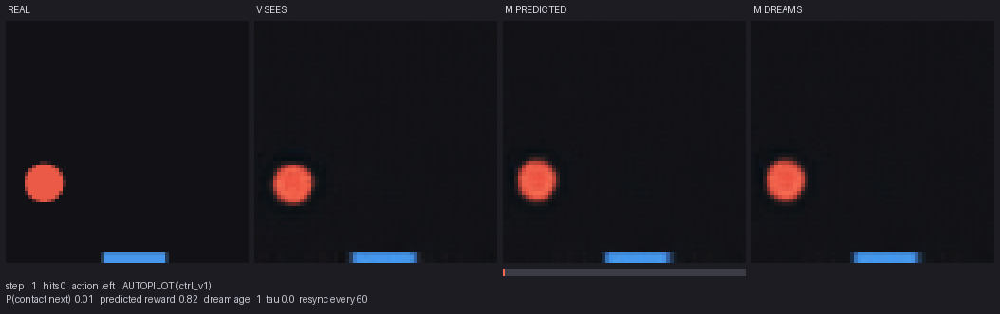
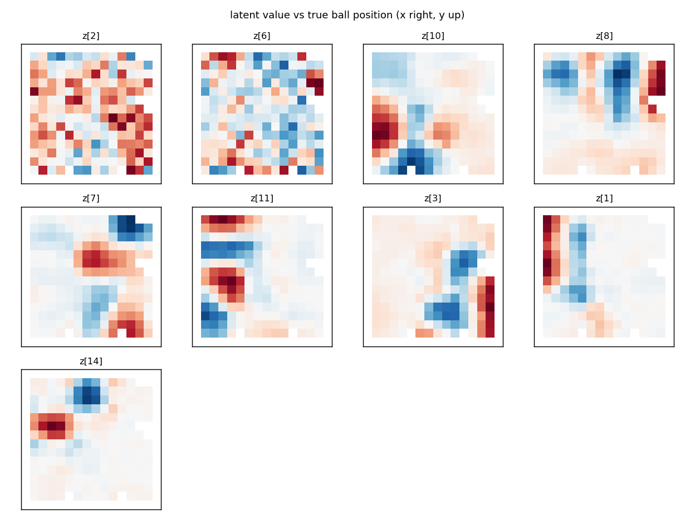
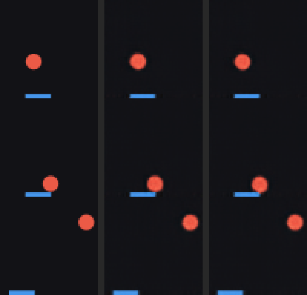
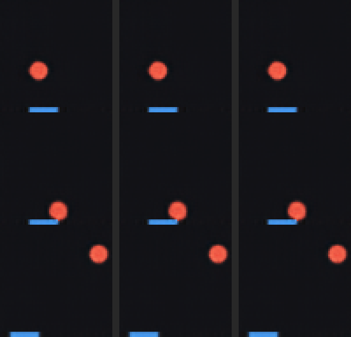
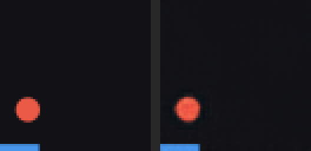
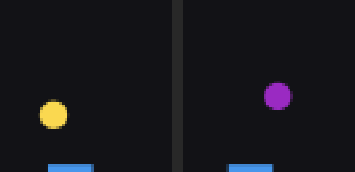
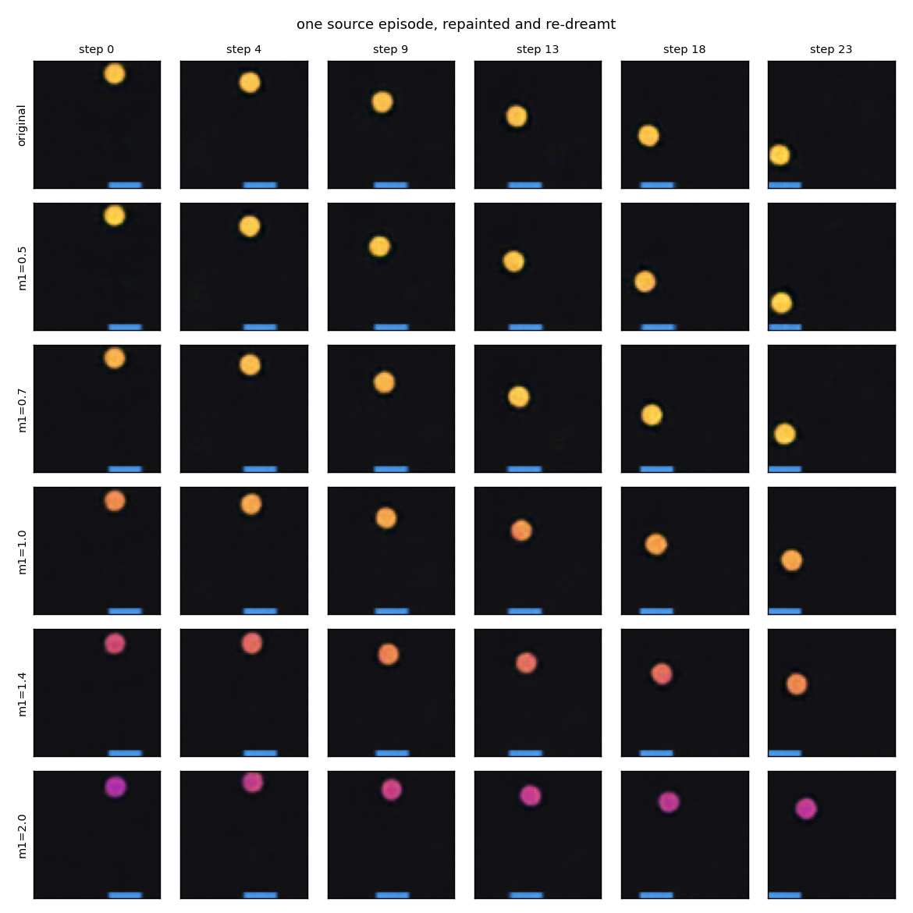
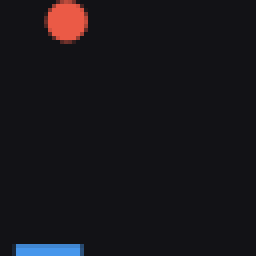

Latent physics world models
Can a world model learn physics and cause and effect from pixels, one hidden variable at a time?
Abstract
We build a complete world model — a variational autoencoder, a recurrent dynamics model, and a controller trained entirely inside the dynamics model's imagination — for the smallest environment that has physics worth learning: a ball bouncing in a box with a paddle the agent can move. We then change the world four times, each time hiding one more variable from the agent, and ask at each stage where in the model that variable ends up and whether the agent uses it. Velocity, absent from any single frame, appears in the recurrent state. A mass that is visible only as colour is read off a single frame and changes how the model dreams. A ball hidden behind a band is carried in memory, imperfectly, and an agent trained on zero real frames learns to move toward where it will reappear. A gravity direction flipped by an invisible event is never remembered by either an LSTM or a transformer; both infer it from the trajectory instead. The recurring lesson is that a one-step prediction loss learns exactly what the next frame pays for, and every ceiling we hit was set by the objective rather than the architecture.
Introduction
Ha and Schmidhuber's World Models showed that an agent can learn to act inside a learned model of its environment and transfer that behaviour back to the real thing. Their recipe has three parts, trained one after another. A vision model V compresses each frame into a short code z. A memory model M, a recurrent network with a mixture-density output, predicts the next code from the current code, the action, and its own hidden state h. A controller C, deliberately tiny, maps [z, h] to an action and is trained with an evolutionary optimiser, either in the real environment or inside M's dream.
The original work asked whether a policy could be learned in the dream. We wanted to ask something adjacent: what does such a model actually know about the physics of its world, and how can one tell? The reason to build the smallest possible environment is that it has a ground truth. Our simulator hands out the true ball position, velocity, paddle position and, later, mass, visibility and gravity direction alongside every frame. The models never see these numbers. We use them only to grade: fit a small regressor from a learned representation to a true variable, and the held-out fit tells us whether that variable is present, and in what form.
The plan was tiered. Each version of the game keeps everything from the last and adds one variable that cannot be read from the current frame in the way the previous ones could. Each tier is a designed experiment: a hypothesis about where the variable should end up, a privileged ceiling that shows what the architecture could hold, a memoryless or blind baseline that shows what the task actually requires, and an ablation that has to land on that baseline before a positive result counts. Two tiers came out negative, and those are kept, because the shape of the failure turned out to be the most instructive thing in the project.
The world
A red ball moves at constant speed inside a unit box and bounces elastically off the walls. A blue paddle sits on the floor and can be driven left or right — three actions. When the ball hits the paddle it reflects, and the paddle's sideways velocity adds a little "english" to the ball. Everything is rendered to a 64×64 image with analytic antialiasing, so sub-pixel position stays in the picture. Data is collected with a sticky random policy that holds each action for a few frames, because independent random actions leave the paddle jittering in the middle of the box and the model never sees sustained motion.
The demo at the top of this page is this environment, re-implemented in a few dozen lines of JavaScript. The agent driving it is a simple tracker, not the trained controller — the trained controllers' play is shown in the videos below, decoded from the actual models. The faint second ball is a caricature of the world model's dream: a copy of the physics whose velocity is perturbed a little every step and re-synced to the real ball every 90 frames. Watching it drift and snap back is a fair picture of what an open-loop rollout of the dynamics model does.

python -m wm.live). Left to right at the same instant: the real game played by the dream-trained controller; what V sees, its reconstruction of that frame; what M predicted this frame would look like one step ago; and a free-running dream fed only the actions, re-synced to reality every 60 frames. The bar under the third panel is M's predicted probability that the ball touches the paddle on the next step.v1 — the recipe, and where velocity goes
Vision
V is a convolutional VAE with a 16-dimensional latent, deliberately larger than the three numbers the world actually needs. Two things about training it turned out to matter more than the architecture. First, the ball covers about two percent of the frame, so a model that draws the background and the paddle perfectly and omits the ball entirely gets a tiny loss; global pixel error is close to useless as a progress signal here, and we track error inside a box around the true ball instead. Second, for the same reason, plain VAE training collapses to the mean image: at initialisation the decoder cannot draw a ball, so encoding its position buys nothing, while the KL penalty pulling the code to the prior is immediate. Giving each latent dimension a small budget of free bits fixes this reliably.

The probes also give the first clean negative result of the project, and it is the correct one. Ball velocity is recovered from a single frame's code at R² near zero. A still image of a ball has a position and no direction of travel, so no encoder could do better. Whatever knows about velocity has to integrate over time.
Memory
M is a single-layer LSTM with 256 units and a five-component mixture-density head, trained by teacher forcing on windows of cached latent codes to predict the change from one code to the next. Its mixture output exists for a specific reason: two frames before the ball reaches the floor, whether it bounces off the paddle or the floor depends on detail the encoder may not have resolved, and a model forced to predict a single next state averages the two futures into a ball in a place it can never be. In practice, on this world, the mixture did not measurably beat a plain Gaussian; we report it because the textbook argument was right in principle and did not matter here.
A dynamics model is graded by what happens when it is cut off from the truth. After eight real frames of warm-up we feed M its own predictions, decode them, and compare with what really happened. Read back into world coordinates, the deterministic dream keeps the ball within one radius of the real one for about 35 frames — roughly one wall-to-wall traverse — and the error grows linearly, as a small velocity error integrated over time should, rather than exploding.

The most direct test of whether the model has learned that actions cause anything is a counterfactual: dream the same start three times, holding the action at left, stay and right. The dreamed paddle slides accordingly and stops at 0.13 and 0.87 — exactly the simulator's clamp limits, half a paddle width from each wall. The model learned not only that actions move the paddle but where the paddle stops. A control model whose action input is zeroed produces three identical dreams.

Learning inside the dream
C is a single linear layer from the 272 numbers of [z, h] to three action scores — 819 parameters, small enough to train with CMA-ES, which needs no gradients and so does not care that the dream is sampled. The reward inside the dream comes from a small head on M that predicts how far the paddle is from the ball; the contact indicator was too sparse and, being trained with heavy class re-weighting, too exploitable. Because M carries velocity, a controller that reads h can anticipate; one that reads only z knows where the ball is but not where it is going.
| controller | interceptions per episode | real frames used to train it |
|---|---|---|
| standing still | 0.93 | — |
| trained in the dream, inputs z only | 0.93–1.03 | 0 |
| trained in the dream, inputs [z, h] | 1.4–1.5 | 0 |
| trained in the real game with the same optimiser | 1.1–1.3 | 1,024,000 |
| oracle reading the true state | 1.55–1.63 | — |
Interceptions per 200-step episode on the real game, 100 held-out episodes; the ball reaches the floor about 1.7 times per episode, so the oracle is near the ceiling. Ranges span two evaluation seed sets.
A policy trained on zero real frames plays the real game at 85–90% of a privileged-state oracle. Removing h from its input collapses it to the do-nothing baseline, which is the paper's central claim reproduced: the controller needs the recurrent state because a frame contains no velocity. And the thing to watch during training is not the dream return alone but the dream return against the real return. For the z-only controller the dream return rises exactly as smoothly as the good controller's while its real score falls: with a representation that cannot support the task, the only progress available to the optimiser is progress against the model's flaws. From the inside, exploitation looks exactly like success.

Two things we learned the hard way in v1 recur through every later tier. The first is that a learned policy that beats an oracle means the metric is broken: the real-trained controller's headline score turned out to come from pinning the ball against the paddle for several contact frames per catch, so we count interceptions rather than contact frames from then on. The second is that an off-by-one in aligning dreamed steps with true steps silently charged the model one frame of ball motion at every horizon, and was caught only because the one-step error was implausibly far above a floor we trusted.
v2 — a mass you can only see as colour
In v1 everything about the ball's motion could be inferred from motion. The second tier adds a link from appearance to dynamics. At each reset the ball is given a mass, drawn log-uniformly between half and double the v1 ball, and shown only as colour on a yellow–red–purple scale. Mass sets speed — heavier is slower, as if launched with the same impulse — and how much the paddle deflects the ball. A band of masses is held out of all training data, so we can ask whether the model interpolates the law to colours it never saw move.

The vision model behaves as it should, with one twist worth sitting with. Colour is in the code, distributed across the same dimensions that carry position rather than on an axis of its own. Velocity components are still absent from a single frame. But speed is now recoverable from a single frame at R² 0.98 — not because the encoder sees motion, but because colour determines the magnitude of motion. "Decodable from a frame" and "visible in a frame" have come apart, and a vision model trained on shuffled stills with no notion of time has acquired information about the dynamics.
The dynamics model's question is whether it uses that. A competent v1-style model infers speed from motion after two frames and never needs colour, so every claim below is paired with a colour-blind twin: the same model trained on the same frames encoded by the v1 VAE, which never saw a coloured ball and carries no colour or speed information. Whatever the colour-seeing model can do that the twin cannot is attributable to reading colour.
Correlation is not causation, and a world model is precisely the tool that makes an intervention cheap. We take one real episode, repaint the ball in its warm-up frames as if it had a different mass — re-rendered exactly from the recorded state — re-encode, and dream forward with the same actions. Nothing changes but the colour. The colour-seeing model dreams the repainted-light ball faster and the repainted-heavy ball slower, with a slope of −0.60 in log speed against log mass against the true law's −1.00; the colour-blind twin does not budge (+0.01). The repainted colour persists through the whole dream, and the repaint at the held-out mass sits closest to the law of all: the model learned a monotone law, not a lookup table.

A constant that would not stay constant
The first v2 controller reached only 79% of the oracle and was tied by the mass-blind v1 controller, which loses only on fast balls. The reason was found by eye in the controller's dream video before any metric caught it: over a long sampled dream the ball slowly changed colour. Read back with a probe, the dreamed mass was uncorrelated with the truth within 25 steps at the sampling temperature the controller trained at, though a deterministic dream held it for 200. Position has restoring forces in this world — walls, the paddle, the speed law. Colour has none. Any latent the model merely copies forward will random-walk under sampling, and this controller had been trained against a speed law that slid under it.
rnn_v2 decays to −0.4: a random walk. Training on posterior means (rnn_v2_mean) made the model brittle. A multi-step open-loop loss (rnn_v2_ms) helped. A conservation penalty on a frozen mass probe during short open-loop rollouts (rnn_v2_cons) holds the correlation flat at about 0.45 for the whole dream — drift replaced by a bounded error — at a slightly better likelihood and dream horizon.Retraining the controller in the fixed dream is the cleanest positive result in the project. In a 2×2 over dynamics model and temperature, the model is the whole effect: halving the temperature inside the drifting dream made things worse, and inside the fixed dream slightly better. The retrained controller intercepts 0.94–1.00 balls per floor visit against the oracle's 0.99, in every mass tercile including the fast balls where the mass-blind controller loses, on colours it never saw, still on zero real frames.
_cons controllers, trained in the fixed dream, reach the oracle line; the ones from the drifting dream do not. Click a name in the legend to drop it.Finally, does the agent itself use colour? A regression of its decisions on state variables gave a false positive on the mass-blind v1 controller, so we intervened instead: repaint the ball in a real eight-frame history, hold everything else fixed, and re-decide. Every v2 controller's drive shifts by a quarter to a third of a standard deviation, flipping its action on 7–14% of approach frames, in the direction the physics predicts; the null control that re-renders with the ball's own colour is exactly zero; the oracle, reading true state, is unaffected. The chain closes: V encodes colour, M reads speed off it and conserves it, C acts on it.
v3 — a ball you cannot see
The third tier removes the ball from view. An opaque band across the box hides it for a stretch of every vertical traverse, and about one hidden run in six contains a side-wall bounce that happens out of sight, so where the ball reappears depends on a collision no frame ever showed. For a sixth of all frames the image carries no information about the ball's position at all, and anything the world model knows about it must have been carried from earlier frames through its own dynamics. This is object permanence, and it is the first test of whether h is a state estimator rather than a velocity buffer.
The vision model does the right thing and nothing else: position is recovered at R² 0.98 when the ball is visible and not at all when it is hidden, a partly covered ball is reconstructed as a partial ball in the right place, and on fully hidden frames the decoder paints nothing — no hallucinated ball at a prior location for the dynamics model to correct. The dynamics model's answer is more interesting than either yes or no. On hidden frames its state holds the ball's height, its vertical velocity and how long it has been hidden, and carries essentially nothing horizontal: it knows the ball is falling behind the band and will come out at the bottom in about so many frames, but not where along the band.
The mechanism is the project's central lesson stated in its cleanest form. Teacher forcing pays for one thing: the next frame. While the ball is hidden the next frame is the blank band whatever the ball's horizontal position. Tracking height and the clock pays immediately, because they determine when the ball reappears and that frame is worth a lot of likelihood. Tracking horizontal position pays nothing until the exit, ten steps away, and one frame in ten cannot compete with nine in which the variable is irrelevant. The model learned exactly what its loss paid for, when it paid for it. A privileged model trained with a supervised position head holds hidden x at R² 0.71 at a better likelihood, so this is an objective problem, not a capacity problem; the fair fixes we tried — a rollout loss long enough to reach the exit frame, and up-weighting the re-emergence frames — closed half the gap in the state and none of it in the dream.
A test that could not fail, and the tier that did not need memory
The controller stage of v3 ended in the most useful negative result of the project. Before reading any controller number we should have run the cheapest possible policy: an oracle that tracks the true ball only while it is at least half visible and otherwise stands still — vision without memory. It caught 99% of balls, 97% of those requiring a long move. The band had been placed by an argument about frames that left out two things: the paddle is a quarter of the box wide, so it never has to reach the landing point, only within half its own width; and the ball is partly visible for about fifteen frames before it disappears and again as it emerges, so a wait-and-see policy has 25 frames of run-up, not ten. The task never required object permanence, and five controllers had been trained to measure it.
v3.1 fixed the design the way v3 should have started: a sweep of bands and paddle widths with the two oracles, before any training. Lowering the band's bottom edge, not raising its height, is what defeats a memoryless policy, because such a policy pre-positions while the ball is still visible above the band and only the drift during the hidden stretch can beat it. With the band's bottom at contact height and a narrower paddle, the full oracle still catches 99% and the memoryless one 48%. The gap between them is, by construction, the entire value of memory for play in that world. The encoder was also retrained on all three band heights, so that the taller-band tests were no longer confounded by an out-of-distribution VAE.
On the re-designed band the fair dynamics model's memory of the hidden ball's horizontal position went from 0.17 to 0.52 — with occlusions twice as long and twice as many hidden bounces, the loss now paid for x often enough to learn it — and matched the privileged ceiling. It lost the exit clock in exchange, the exact inverse of v3. And the dream itself stopped letting the ball out: a deterministic rollout never takes a step whose per-step probability is below one half, so a model that has lost the exit clock never ends an occlusion. Yet a controller trained inside that dead dream beats the memoryless bound by 0.22, moves the paddle on half the frames the ball is hidden, and covers 28% of the required move while blind. What transferred was not a simulation of the occlusion but M's dense reward head, which reads the true ball–paddle gap at R² 0.72 from a state that carries the hidden ball's position. The world model was useful as a feature-conditioned reward model while being a bad world. That is a weaker claim than the method usually makes, and it is the one the evidence supports.
v4 — a bit set by an event
In every earlier tier the information needed to predict the future was recoverable from a short window of recent frames. The last tier removes that. A weak vertical gravity acts on the ball, and its direction flips on every paddle contact. The acceleration is invisible in any window shorter than about fifteen frames and unmistakable over forty, so the two signs produce visibly different trajectories while being indistinguishable frame to frame. To predict well, a model has to notice the contact and remember its consequence for a hundred frames or more. This is the regime where an LSTM that must carry a bit through hundreds of updates was expected to lose to a transformer that can look back at the frame where the bit was set.

The design sweep came first this time, and it retired the controller question before any training: a wrong gravity sign shifts the landing point by at most 0.035 of the box, a quarter paddle, and the error vanishes as the ball approaches while the paddle's speed does not, so a blind tracker always has slack to correct itself. A horizontal side-wind was tried as a replacement and failed for a reason with a closed form — the box walls fold the parabola, and no acceleration exists that is both binding for a paddle this fast and still lets the ball cross the box. The sign never matters for play. It matters a great deal for prediction, so v4 became a dynamics tier, and we built a causal transformer over the last 128 latents and actions, sharing every head with the LSTM so the two differ in nothing but the sequence module.
The interventional test agrees. For real paddle contacts we re-simulate a twin warm-up with the paddle moved so the ball misses, dream both forward, and compare the curvature of the dreamed paths; a model that knows contact flips gravity produces opposite curvatures. The fraction with opposite sign is 0.47 for the LSTM and 0.41 for the transformer against a chance level of 0.50 — nothing, for every model. The transformer is the better one-step predictor by every ordinary measure, and the variant with a context of 32 frames, built as the control that cannot see back as far as a flip, is the best model in the table. Seeing back to the flip was never used. The one-step loss pays for the sign only through its effect on the next latent, which is one part in ten thousand, spread over hundreds of frames; the cheapest way to earn most of that is to read the curvature from the recent window, which both architectures can do and both did. Storing a bit at a rare event and holding it indefinitely is a strictly harder solution to the same objective, and nothing in the objective rewards the difference.
Discussion
Read as a whole, the four tiers say one thing about the recipe as it is usually run. A one-step teacher-forced dynamics loss learns whatever the next frame pays for: velocity, paid every frame; colour to speed, paid every frame; the height and exit time of a hidden ball, paid at re-emergence ten frames away; its horizontal position, paid once the occlusions were long enough for the exit frame to matter. It does not learn what the next frame does not pay for: a constant that nothing restores, an exit clock twenty frames away, a bit whose per-frame effect is negligible. In every tier where a ceiling was hit, a privileged head proved the network could hold the state when told what to hold. The objective set the ceiling, not the architecture — including in the one tier built to compare architectures.
The methodological lessons were paid for and are worth listing. Measure the environment before training in it: a memoryless oracle, an oracle sweep, and a check that the dream actually puts the object where the agent can act each cost minutes and each changed what every later number meant, twice by showing the tier's premise was false before a model existed. Pair every positive claim with a matched control — the colour-blind twin, the memory-less ablation, the context-32 transformer settled more than the main runs did. Intervene rather than regress: repaint-and-redream and re-simulate-a-miss answered in one table what regression analyses had muddled twice. Report the fraction of cases scored, the seed spread and the null next to every number; censoring, single-seed orderings and a non-flat null would each have misled without them. And a world model can be useful while being a bad world; say the weaker thing the evidence supports.
What would move the remaining negatives is, we think, an objective with long-range credit — a predictive or contrastive target on far-future latents, or a loss that pays for an event's consequences directly — rather than another architecture. That, a dream that re-emerges hidden objects, and a second seed everywhere are where a next tier should start.
Open source code
Everything is in the repository, MIT licensed: the simulator, all three models and their trainers, every evaluation, 206 tests, the checkpoints and every figure on this page, and a script that regenerates all the data deterministically. The documentation is written for a reader new to world models and goes deeper than this page on every tier; the technical run logs record every command, wall-clock time and number. Everything here ran on one Apple M1 laptop with 8 GB of memory. The recipe is Ha and Schmidhuber's; the per-tier experimental design is what this project adds. Claude was used for implementation and documentation.